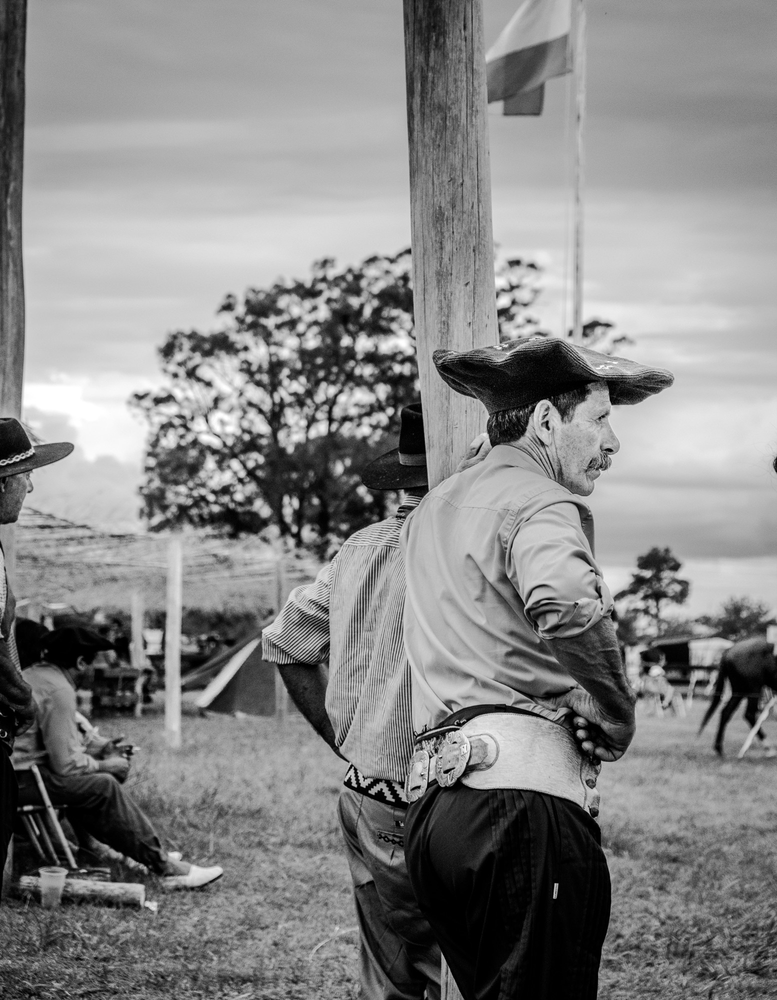

Jineteada, Fernet y Fútbol
Entre Rios, Argentina (Marzo 2024)
Bombachas de campo, alpargatas y cuchillo verijero completan el atuendo de los gauchos llegados de toda la provincia para no perderse el evento. El olor a asado con leña invade el aire de la plaza detrás de la antigua estación de tren de Gilbert. Las mejores estancias vinieron a competir y a mostrar la destreza de sus criollos. Jóvenes y viejos, y hasta una mujer, se suman al desafío para demostrar su agilidad sobre el caballo.
Mientras tanto, un señor improvisa un bar y sirve Gancia y fernet con coca (un 30% fernet, 70% coca y mucho hielo), tal vez el mejor que probé en mi vida. De repente, el cielo se larga a llorar, pero a nadie parece importarle. Los chicos siguen persiguiendo la pelota descalzos sobre el pasto. Rituales y tradiciones propios a un pueblo que vive el patriotismo sin falsa modestia. Sin importar la edad ni el género, no hay nadie más orgulloso de su nationalidad que un argentino.
